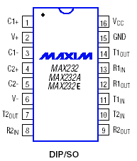
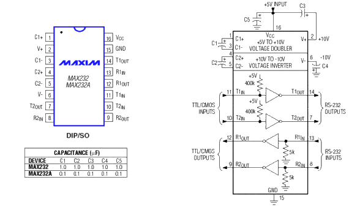
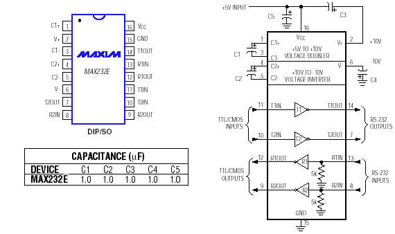

Convertisseurs RS232 MAX232
Présentation des interfaces MAX232, MAX232A et MAX232E de MAXIM.[cite: 51]

I.1 Introduction
Le MAX232 est un composant créé par MAXIM que l'on trouve sous d'autres références chez d'autres fabricants. Il sert d'interface entre une liaison série TTL (0-5V) et une liaison série RS232 (+12 -12V) et ce avec une simple alimentation 5V.[cite: 51]
Rien d'original ? Pourtant le célèbre MAX232 a beaucoup évolué depuis sa création. Si le brochage est identique aux premières versions, d'autres caractéristiques ont évolué. Sa consommation est plus faible, son débit admissible a augmenté, il est mieux protégé, plus fiable et il est fabriqué avec des boîtiers de tous types.[cite: 51]
Mais surtout, les condensateurs externes ont aujourd'hui des valeurs de capacité plus faible jusqu'à 0.1µF au lieu des 10 ou 47µF d'autrefois (certaines versions se passent même de condensateur !). Je ne vous présenterai ici que la série des MAX232, MAX232A et MAX232E.[cite: 51]
I.2 Description des MAX232 et MAX232A

Sans trop rentrer dans les détails, le MAX232 et MAX232A sont assez proches en terme de caractéristiques électriques et se distinguent surtout par la valeur des condensateurs externes différentes et un débit plus faible pour le MAX232.[cite: 51]
Le câblage est assez simple et vous disposez de 2 drivers dans un sens et 2 dans l'autre, de quoi connecter RxD, TxD et RTS et CTS de la liaison RS232. Ce circuit convient donc dans la majorité des cas.[cite: 51]
I.3 Description du MAX232E

Le MAX232E est compatible broche à broche avec les deux autres. Ses caractéristiques électriques sont sensiblement identiques avec le MAX232 mais il est extrêmement bien protégé des "electrostatic discharge (ESD) shocks" (décharges électrostatiques) et ce pour ±15kV.[cite: 51] Fonctionnement garanti et protection maximum.[cite: 51]